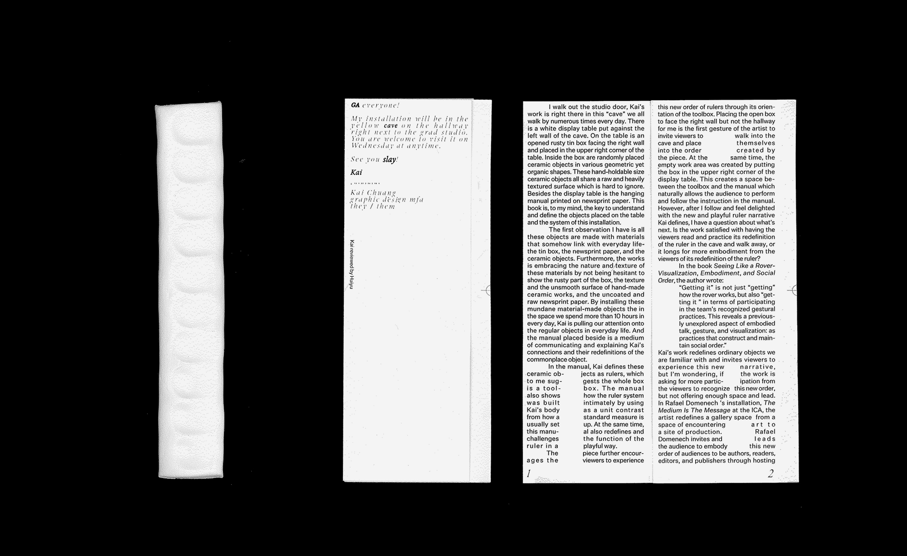
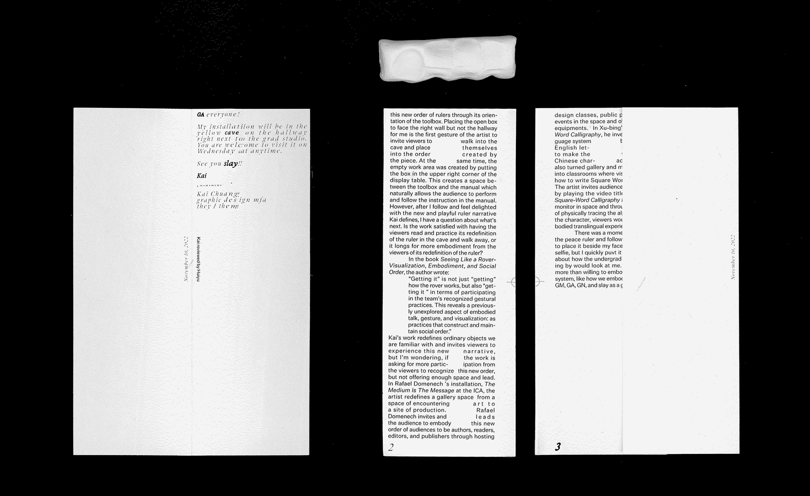
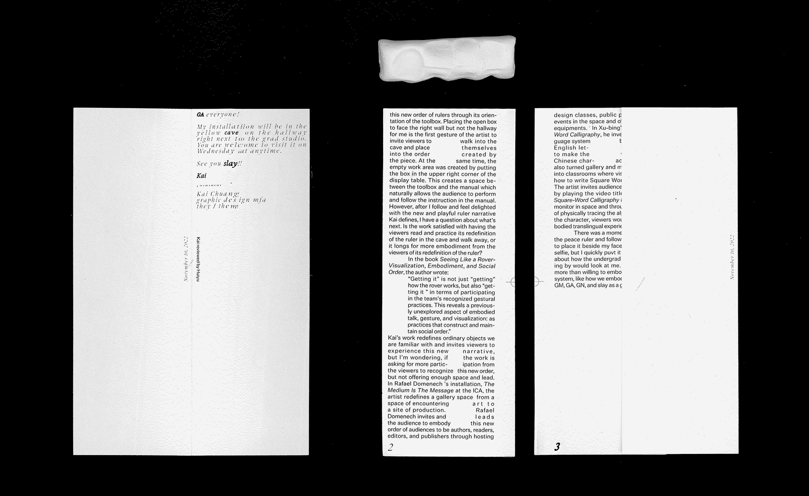
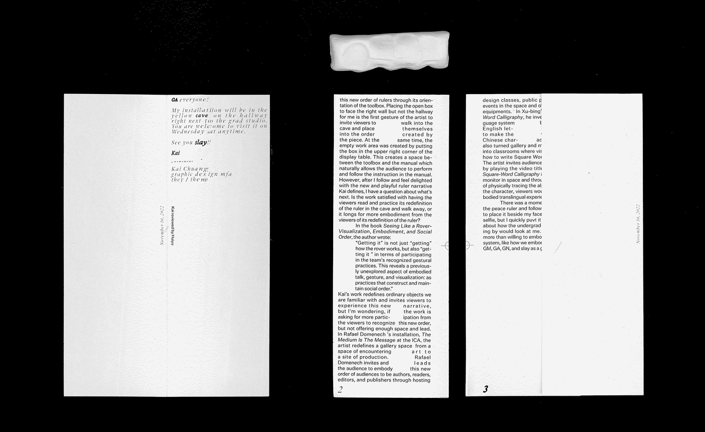

Review Writing for Kai Chuang's Ruler
Design, Writing, December 2022.
Laser Print, 7 × 18 cm.
This is a critic writing and design for Kai Chuang’s Ruler. Kai created a new measurement system by referencing the size of their body to challenge the dominant unit system. The critic was printed in the size of Kai’s ruler and recreated the
shapes imprint on the Ruler with a typography layout.

 

